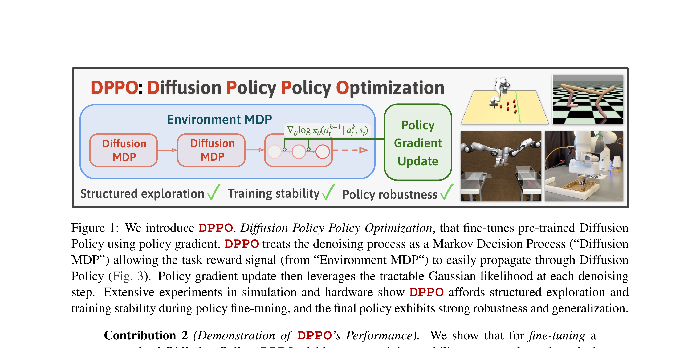

Diffusion Policy Policy Optimization
Ren 等 · 2024 · arXiv:2409.00588 · Zotero UPIQJGUP
DPPO 把完整扩散去噪链视为策略内部的 MDP，再把环境奖励传播到各去噪步骤，用 PPO 微调预训练 diffusion policy。
§1 Introduction：Diffusion Policy 的内部去噪步骤能否成为 RL 的动作
Diffusion Policy 能表达多峰连续动作，并通过 action chunk 获得平滑控制，但 imitation 只复现 demonstration 分布。在线 RL 需要 policy likelihood、探索和稳定 ratio update；若只把最终动作视为一个隐式样本，diffusion 多步采样的 log-prob 难算，直接对整条链反传也可能方差很大。
DPPO 把每个 denoising transition 看成内部 MDP step：环境状态固定，latent action 从噪声逐步变成干净 chunk；整条机器人 episode 是多个 diffusion MDP 的串联。每个 transition 有高斯条件概率，因此可以计算 PPO ratio，并把环境 advantage 分配给对应去噪链。论文再调整 noise schedule、截断可训练步骤和正则，兼顾探索与稳定。
展开原文 · 核心视角
“unrolls the denoising diffusion process into an MDP”
§2 Related Work：diffusion guidance、policy gradient 与两层 MDP
reward/classifier guidance 在采样时修改 score，通常依赖离线 reward gradient；Diffusion Q-learning 用 critic 引导 actor；DDPO 等生成模型 RL 已把 denoising 写成 MDP，但奖励在最终图像后获得。机器人 policy 还多一层真实环境动态，形成 denoising transition 与 environment transition 嵌套。
DPPO 给出 diffusion actor 在线 RL 的通用配方，后续 ReinFlow 则指出 flow policy 的确定性 ODE 没有同样的高斯 transition，需另造探索和 likelihood。二者比较不能只看 reward，还要对齐 denoising/积分步数、wall time 和最终动作 chunk 执行长度。
§3 问题设定：SFT 到底漏掉了什么
VLA 预训练与 SFT 解决“从观测到动作的模仿”，但部署是闭环过程：动作会改变下一帧，错误会把策略带到演示没有覆盖的状态。扩散动作头表达力强，但长去噪链让策略梯度反传昂贵且容易不稳定。
环境每一步的动作由 K 步反向扩散产生；DPPO 把中间噪声状态视作扩展 MDP 的状态，把去噪转移视作内部策略动作。
展开原文 · 核心主张
“structured and on-manifold exploration, stable training, and strong policy robustness”
§4 方法总览：反馈信号怎么走
上一节明确了状态、动作与反馈，现在沿论文原图追踪训练信号。重点不是背模块名，而是判断：哪部分保持预训练先验，哪部分真的被 RL 改写。

1. 加载预训练 diffusion policy
加载已由行为克隆训练好的 diffusion policy，使初始动作分布位于可执行轨迹附近。RL 不负责从零发现抓取，而只需在已有多模态动作中提高任务回报。
输入是什么：随机噪声，以及当前画面、语言指令或机器人状态等条件信息。噪声只是生成过程的起点，不是机器人真的要执行的动作。
这一步究竟做什么：加载已由行为克隆训练好的 diffusion policy，使初始动作分布位于可执行轨迹附近。RL 不负责从零发现抓取，而只需在已有多模态动作中提高任务回报。
输出到哪里：参数得到更新的模型，或能供下一轮训练使用的新监督信号。这个结果会交给下一步“把每个去噪转移视为内部动作”继续处理。
为什么不能省略：前面的数据或分数本身不会自动改变模型；必须通过损失函数把误差信号变成参数更新。
2. 把每个去噪转移视为内部动作
一次动作生成的每个去噪转移被视为内部 MDP 动作。状态由环境条件、当前噪声样本和 diffusion timestep 构成，因此最终环境奖励可以沿去噪链分配到具体生成步骤。
输入是什么：来自上一步“加载预训练 diffusion policy”的产物：参数得到更新的模型，或能供下一轮训练使用的新监督信号。本步骤还会按论文设置读取当前条件、时间步或训练信号。
这一步究竟做什么：一次动作生成的每个去噪转移被视为内部 MDP 动作。状态由环境条件、当前噪声样本和 diffusion timestep 构成，因此最终环境奖励可以沿去噪链分配到具体生成步骤。
输出到哪里：一个或多个候选未来、动作或轨迹，以及必要的中间状态。这个结果会交给下一步“环境 rollout 计算 advantage”继续处理。
为什么不能省略：随机起点允许模型表达多种合理结果；逐步生成则把无结构噪声限制到训练数据支持的动作或视频分布。
3. 环境 rollout 计算 advantage
机器人执行生成的动作 chunk 后得到环境回报，再计算外层 advantage。这个 advantage 会关联到产生该 chunk 的整条去噪轨迹，而不是把中间噪声误当成真实环境动作。
输入是什么：来自上一步“把每个去噪转移视为内部动作”的产物：一个或多个候选未来、动作或轨迹，以及必要的中间状态。本步骤还会按论文设置读取当前条件、时间步或训练信号。
这一步究竟做什么：机器人执行生成的动作 chunk 后得到环境回报，再计算外层 advantage。这个 advantage 会关联到产生该 chunk 的整条去噪轨迹，而不是把中间噪声误当成真实环境动作。
输出到哪里：一个或多个候选未来、动作或轨迹，以及必要的中间状态。这个结果会交给下一步“在去噪链上做 clipped policy-gradient 更新”继续处理。
为什么不能省略：学习算法只能从它见过的经历中改进；这一步决定训练数据是否覆盖成功、失败和恢复状态。
4. 在去噪链上做 clipped policy-gradient 更新
PPO clipping 约束新旧去噪转移的概率比，逐步更新 denoiser。它允许直接优化生成策略，但反向链长、显存高；clip 与 KL 是防止少量高回报 rollout 破坏 BC 先验的关键。
输入是什么：来自上一步“环境 rollout 计算 advantage”的产物：一个或多个候选未来、动作或轨迹，以及必要的中间状态。本步骤还会按论文设置读取当前条件、时间步或训练信号。
这一步究竟做什么：PPO clipping 约束新旧去噪转移的概率比，逐步更新 denoiser。它允许直接优化生成策略，但反向链长、显存高；clip 与 KL 是防止少量高回报 rollout 破坏 BC 先验的关键。
输出到哪里：一个或多个候选未来、动作或轨迹，以及必要的中间状态。这是图中这条链路的最终产物，随后会进入真实执行、模型更新或指标评测。
为什么不能省略：前面的数据或分数本身不会自动改变模型；必须通过损失函数把误差信号变成参数更新。
§5 机制细拆：动作、价值与更新边界
上图给出了宏观流程，但真正决定训练是否稳定的是三个接口：动作以什么粒度出现、反馈怎样变成可学习信号、哪些参数允许被更新。
§6 目标函数：把直觉压缩成可检查的量
前一节说清了信号路径，这里把核心优化目标写成教学化公式。读公式时依次检查：回报影响谁、数据支持在哪里、预训练策略受到什么约束。
- $k$
- 扩散去噪步骤
- $r_k$
- 对应去噪转移的新旧概率比
- $A$
- 最终环境回报产生的优势
从 behavior cloning 的 Diffusion Policy 开始，使用 clipped surrogate、价值学习和正则做 on-policy fine-tuning。
§7 训练与评测：数字是在什么条件下得到的
只看最终成功率会隐藏数据预算、仿真/真机差异和基座强弱。本节把论文的实验对象与比较关系放回同一张表。
| 策略与动作 | 环境每一步的动作由 K 步反向扩散产生；DPPO 把中间噪声状态视作扩展 MDP 的状态，把去噪转移视作内部策略动作。 |
|---|---|
| 训练反馈 | 真实环境只在最终动作后给奖励，advantage 被广播到对应的去噪转移，并由各步概率比参与 PPO。 |
| 更新方式 | 从 behavior cloning 的 Diffusion Policy 开始，使用 clipped surrogate、价值学习和正则做 on-policy fine-tuning。 |
| 实验覆盖 | 覆盖常见连续控制、像素机器人任务、FurnitureBench 长程装配，并将仿真训练策略零样本部署到硬件。 |
| 关键对照 | 相对 Q-guided diffusion，DPPO 直接优化环境回报且探索保持在扩散数据流形附近；代价是整条链的反传。 |
§8 结果怎么读：证据、因果与可迁移结论
论文报告在多类机器人基准上总体性能和效率领先，并展示仿真训练策略零样本部署到真实长程装配。
相对 Q-guided diffusion，DPPO 直接优化环境回报且探索保持在扩散数据流形附近；代价是整条链的反传。
生成模型内部采样过程可以被重新解释成决策过程，但这种解释会把计算图长度带进 RL 成本。
§9 复现与工程检查
前一节判断了证据强度，复现时还要把训练信号对齐、时间尺度和数据统计逐项落地，否则“同名算法”也可能得到完全不同的结果。
- 扩展 MDP 的 log-prob 与时间索引要正确；区分环境 horizon 和 denoising horizon；记录显存、K 和 rollout 吞吐。
- 先跑通不加 RL 的预训练/SFT 基线，并保存逐任务成功率与失败视频。
- 同时记录环境步数、真实墙钟时间、人工介入次数、更新次数和推理延迟。
- 把奖励、终止、action chunk mask 与归一化统计做成可视化单元测试。
§10 适用边界与研究启发
反向传播穿过整条去噪链有显存与计算开销；少步 flow 策略出现后，DPPO 不再总是效率最优。
生成模型内部采样过程可以被重新解释成决策过程，但这种解释会把计算图长度带进 RL 成本。